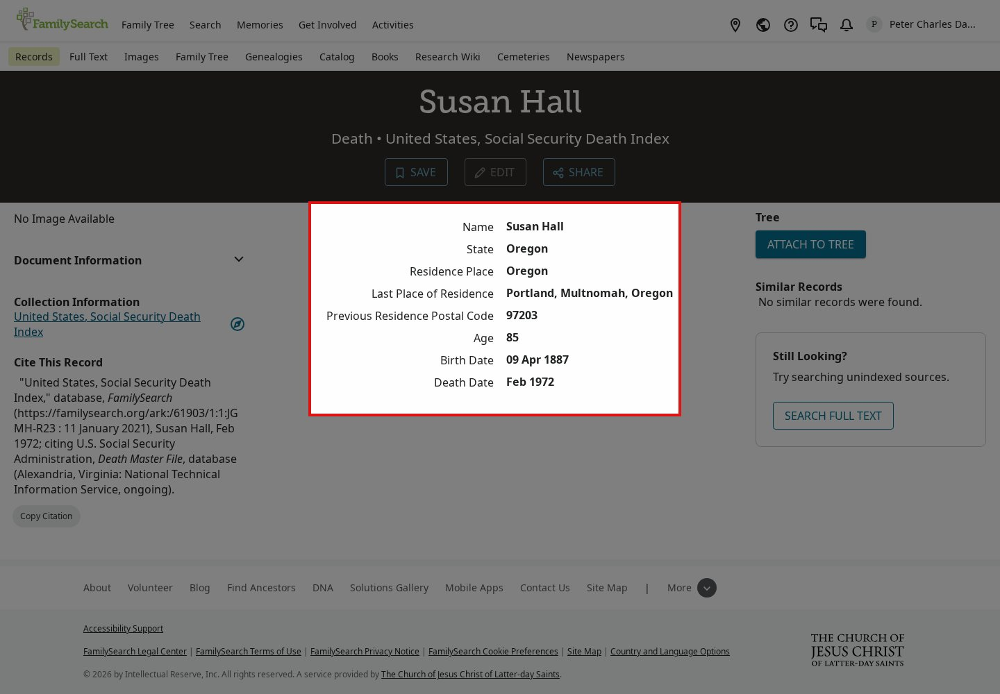
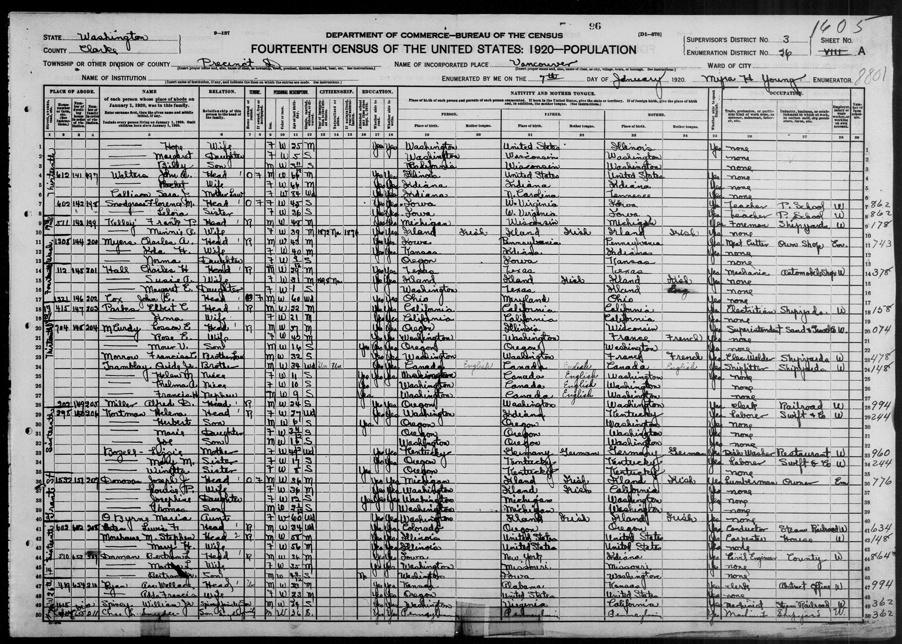
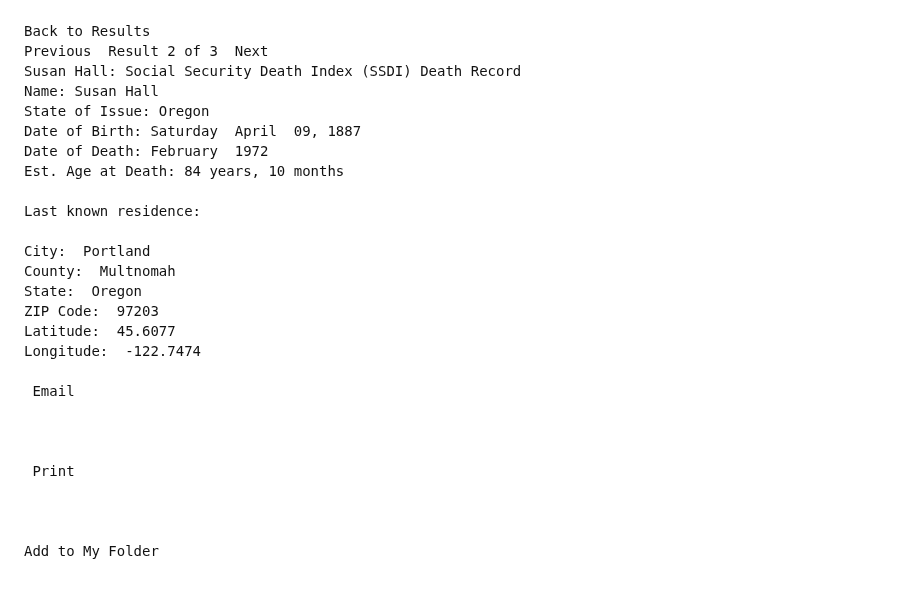
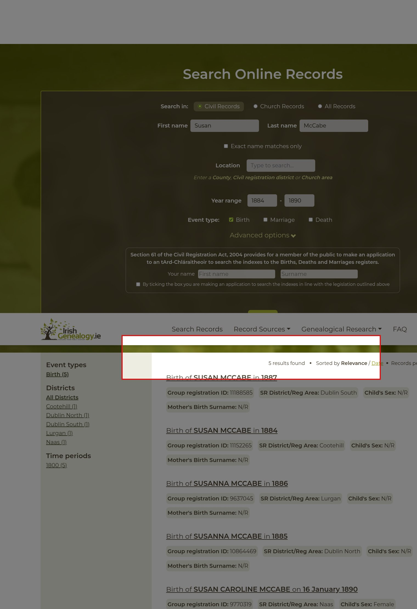

Susan May McCabe 1886–1972
Peter's great-grandmother.
Susan May McCabe was born between Apr 1886 and 9 Apr 1887 in Ireland1, the daughter of Peter McCabe23,24. She married Charles Hall on 17 Aug 1917 (according to the family's 2015 tree)25. She died on 6 Feb 1972 in Portland, Multnomah County, Oregon, United States4,15,16,17,18 and was buried at Mount Calvary Cemetery, Portland, Multnomah County, Oregon, United States19.
Family
- Parents
- Peter McCabe documented
- Husband
- Charles Hall b. 1890 · married on 17 Aug 191725
- Children
- Charles Henry Hall 1920–2001 documented
- Margaret Hall 1919–1978 documented
- Catherine Elizabeth Hall 1922–2012 documented
Life events
| Event | Date | Place and details |
|---|---|---|
| Born | bet Apr 1886 and 9 Apr 1887 | Ireland Preferred version: Every census and her children's birth certificates give Ireland (or Northern Ireland in 1930/1940); 'Dublin' comes only from the unsourced 2015 tree.1 |
| Born | 9 Apr 1886 | Ireland2 |
| Born | 9 Apr 1887 | Dublin, Ireland According to an online family tree and the family's 2015 tree3,4 |
| Arrived | 1898 | 14 |
| Married | 17 Aug 1917 | with Charles Hall According to the family's 2015 tree25 |
| Lived | 7 Jan 1920 | Vancouver, Clark County, Washington, United States6,7 |
| Lived | 7 Apr 1930 | Portland, Multnomah County, Oregon, United States8,9 |
| Lived | 1940 | Portland, Multnomah County, Oregon, United States10 |
| Lived | 13 Apr 1950 | Portland, Multnomah County, Oregon, United States11,12 |
| Buried | 1972 | Mount Calvary Cemetery, Portland, Multnomah County, Oregon, United States19 |
| Lived | 6 Feb 1972 | Portland, Multnomah County, Oregon, United States13 |
| Died | 6 Feb 1972 | Portland, Multnomah County, Oregon, United States4,15,16,17,18 |
| Origin | Dublin, Ireland According to the family's 2015 tree5 | |
| Note | Ruled out (all-Ireland index, 1885-1890, first name Susan/Susanna, surname McCabe, plus every unnamed 'Unknown McCabe' birth of 1886-87 in the Dublin districts and Loughrea, and McCade/McCare variants): Susanna, 6 Nov 1886 Lurgan, father Stephenson McCabe, tailor, mother Mary formerly M[alt?]e…20 | |
| Note | All-Ireland civil births 1884-1897 for Susan/Susanna/Susannah/Susana/Susie/Susanne with McCabe/Mc Cabe/MacCabe/Cabe (exact and fuzzy): 1884 Cootehill (above); 1885 Dublin North (Susanna Maria, Finglas, father Hugh); 1886 Lurgan (Susanna, father Stephenson, tailor); 1887 Dublin South (Ringsend;…21 | |
| Note | Her three children's birth certificates give her birthplace as IRELAND and her age as 30 (Jan 1919), 32 (Jun 1920) and 34 (Feb 1922), which agree on a birth in January or February 1888. Her own later records claim 9 Apr 1887. Both are three or four years after the Gortskeagh Susan's birth (22 Mar…22 |
Possible records (not confirmed)
Records that may concern her, but don't settle it: an initial and a surname only, a family recollection, or a reading that needs a second look. Each links to the record.
- Birth 1887-02-01 13 Bridge Street, Ringsend, Donnybrook registrar's district, Dublin South SRD, Co. Dublin: Father Patrick McCabe, labourer, 13 Bridge Street; mother Elizabeth McCabe formerly Redmond; informant Margaret Kelly, present at birth, 15 Bath Street; registered 2 March 1887 by A. Hudson, Asst. Registrar. Entry no. 58.26 This is the only civil birth indexed as Susan McCabe in all Ireland in 1887, and it is in Dublin. But the father is PATRICK, not Peter, the date is 1 Feb, not 9 Apr, and the year conflicts with the Oregon death index (1886). It is a weak candidate until something US-side (her death certificate 72-02849, an SS-5, the marriage) names her parents.
- Residence 1910 San Francisco, Assembly District 41, California: Single, born 1885 Ireland, immigrated 1905, in the Wilfred B. Chapman household (presumably a servant).27 Only the name, an Irish birth c. 1885-87, a West Coast address and domestic service match. The immigration year (1905) fits neither census (1898/1903).
- Marriage 1944-12-07 King County, Washington: Marriage licence index: McCabe, Susie A., to Gardner, Carl A., licence 108364.28 'Susie A.' matches the 1920 census, but our Susan is 'Susan Hall, separated' in the 1950 census and 'Hall' at death in 1972. Probably another woman.
- Other: Alternative candidate: Susan McCabe b. 22 Mar 1884, Gortskeagh, Drum district, Cootehill SRD, Co. Cavan; father Lawrence McCabe, mother Margaret formerly Curran (cibi-11152265, entry 2). 1901 census, Gortskeagh, Drung DED, house 8, Roman Catholic: Laurence 45, farmer; Margaret 45; Susan 17; a DNA match 14; Owen 11; Ellen 9; Maggie 7; Katie 6; Lawrence 3; Bernard 0 (ids 7256764-7256774). 1911:…29 Worth keeping: it is Ulster (the censuses' 'Northern Ireland', loosely), Catholic, in Ireland in 1901 and gone by 1911 (fits 1903 immigration), with a brother James. Our Susan's daughters were Margaret Ellen and Catherine, matching this mother Margaret and the sisters Ellen, Maggie and Katie. Against: born 1884, three years earlier than any age Susan gave; no record connects her to America yet.
- Immigration: Passenger lists on FamilySearch, Susan McCabe b. 1880-92: Ellis Island 1898 has only a Susan b. 1874 (8 Jun 1898, residence 'Bai[lieborough?]'); nothing in 1903. Near misses: 13 Sep 1902 (no age, JF2F-8ZJ); 20 Sep 1902 (b. 1883, Limerick); 22 Sep 1904 (b. 1883); 11 May 1905 (b. 1885, JFQF-8M7); 14 May 1905 (b. 1879, Derryham). Canada 1881-1922: only Jun 1905 Quebec (b. 1888, 2Q3H-W4D). West…30 Negative for 1898 and 1903. The 1904 Ellis Island Susan b. 1883 (residence not read) should be opened as a possible Cavan match.
- Immigration 1905-06 Quebec City, Canada (Bavarian, 2nd cabin): Line 23: Susan McCabe, F, 17, domestic, Ireland, county Cavan, destination Toronto, railway order 11978. Age gives b. ~1888, which fits Susan Hall's census ages (1888-90). No link to Peter's Susan yet.31 Name, county and age fit; nothing else connects her. Recorded as a lead.
Records









Open questions
- Parents of Charles H. Hall Sr. (b. c. 1891 TX) and Susan McCabe (b. 1886/87 Ireland) Open
- Where and when Charles H. Hall Sr. married Susan McCabe Open
- Matthew McCabe × Kate Redmond, Donnybrook (a second McCabe × Redmond couple near Ringsend) Ruled out
- Susan McCabe's father was Peter McCabe (her 1972 Oregon death certificate) Confirmed
- Peter McCabe × Catherine Prunty of Lislea (Currin RC) and Fair Green, Belturbet, Co. Cavan (with daughter Susan b. c. 1885 and daughter Margaret McCabe d. 1935 in Portland, OR) Possibly
- Susan McCabe = Susan b. 22 Mar 1884, Gortskeagh, Co. Cavan (Lawrence McCabe × Margaret Curran) Ruled out
- Susan McCabe, 16, sailed Ireland → New York on the Majestic, 16 Aug 1900 Doubtful
- Susan McCabe, 17, domestic, Co. Cavan, arrived Quebec June 1905 (SS Bavarian), bound for Toronto Possibly
- Susan McCabe = the Susan born in Ringsend, Dublin, on 1 Feb 1887 (father Patrick, labourer; mother Elizabeth Redmond) Ruled out
Sources
- Susan Hall, d. Feb 1972 Portland.
Susan Hall | Death Feb 1972 Portland, Multnomah, Oregon | Birth 09 Apr 1887
SSDI: 9 Apr 1887. Oregon death index: born April 1886. Census ages point to 1888-90 (31 in Jan 1920, 40 in 1930, 50 in 1940, 63 in 1950). Dublin is in the 2015 family tree; the 1920 and 1950 censuses and her children's birth certificates say Ireland, and the 1930 and 1940 censuses say Northern Ireland.
- Certificate of Death: Susan McCabe Hall (State File No. 72-002849), State File No. 72-002849, Local File No. 855.
AGE—Last birthday (years): 85 | DATE OF BIRTH (month, day, year): April 9, 1886 | STATE OF BIRTH: Ireland | FATHER—NAME: Peter McCabe | MOTHER—Maiden Name: ------ | INFORMANT—NAME and relationship to deceased: Catherine Hall-Daughter
Date of birth April 9, 1886 and birthplace Ireland (father: Peter McCabe; mother's maiden name blank), as given by her daughter Catherine Hall on her 1972 Oregon death certificate (72-002849).
- Peter's tree, danenberg.sql, 2007–2015, personae 117, birth.
- FamilySearch Family Tree: Susan A McCabe (P93R-SLT).
- Peter's tree, danenberg.sql, 2007–2015, personae 117, provenance.
- 1920 US Census, Vancouver Precinct D, Clark County, Washington, ED 36, sheet 8A, lines 14–16.
Fourteenth | 112 | 145 | 201 | Hall Charles H | Head | R | M | W | 29 | M | Yes | Yes | Texas | Texas | Texas | Yes | Mechanic | Automobile shop | W / Susie A. | Wife | F | W | 31 | M | 1898 | Na | Yes | Yes | Irland | Irland | Irish | Irland | Irish | Yes | none / Margaret E. | Daughter | F | W | 1 | S | Washington | Texas | Irland | Irish | none
1920 US Census (enumerated 7 January 1920, Vancouver Precinct D, Clark County, Washington, ED 36, sheet 8A, line 15): Susie A. Hall, wife, age 31, born Ireland, immigrated 1898, naturalized, in the rented home of her husband Charles H. Hall (29, automobile shop mechanic) with daughter Margaret E. Hall (1) at 112 Fourteenth Street.
- 1920 US Census, Vancouver Precinct D, Clark County, Washington, ED 36, sheet 8A, lines 14–16.
112 | 145 | 201 | Hall Charles H | Head | R | M W 29 M | Yes Yes | Texas | Texas | Texas | Mechanic | Automobile Shop | W ... Susie A. | Wife | F W 31 M | 1898 Na | Yes Yes | Ireland | Irish | Ireland | Irish | Ireland | Irish | none
Lived in Vancouver, Clark County, Washington with her husband Charles Henry Hall Sr.: their three children Margaret Ellen (6 Jan 1919), Charles Henry (11 Jun 1920) and Catherine (12 Feb 1922) were born in Vancouver, and she was enumerated there at house no. 112 (dwelling 145, family 201) on 7 January 1920.
- 1930 US Census, Portland City Precinct 473, Multnomah County, Oregon, ED 26-472, sheet 2A, lines 47–50.
April 7 | Leonard | 1225 | 115 | 115 | Hall, Susie | Head-H | R | 13.50 | R | No | F | W | 40 | M | 29 | No | Yes | Northern Ireland | Northern Ireland | Northern Ireland | English | 1903 | Na | Yes | Servant | Private family | 95-96 | W | Yes
1930 US Census (enumerated 7 April 1930, Portland Precinct 473, Multnomah County, Oregon, ED 26-472, sheet 2A, line 47): Susie Hall, head of household, renting at 1225 Leonard Street ($13.50/mo), age 40, married (age at first marriage 29), born Northern Ireland (parents born Northern Ireland), immigrated 1903, naturalized, servant for private family, with children Margaret E. (11), Charles H. (9), and Catherine E. (8).
- 1930 US Census, Portland City Precinct 473, Multnomah County, Oregon, ED 26-472, sheet 2A, lines 47–50.
1225 | 115 | 115 | Hall, Susie | Head-H | R | 13.50 | R | No | F | W | 40 | M | 29 | No | Yes | Northern Ireland | Northern Ireland | Northern Ireland | English | 1903 | Na | Yes | Servant | Private family
1225 [street not read], dwelling 115, family 115. Head, renting, $13.50 a month, no radio. Female, white, 40, married, age at first marriage 29. Born Northern Ireland; father and mother born Northern Ireland; speaks English. Immigrated 1903, naturalized. Servant in a private family. Children: Margaret E. 11, Charles H. 9 and Catherine E. 8, all born Washington, father born Texas. No husband in the household.
- Susan Hall household, Portland, sheet 2B, lines 49-50.
Susan Hall | Head | 50 | W[idowed] | Northern Ireland
Head, 50, 'widowed', born Northern Ireland, at the same place in 1935. Daughter Catherine is 18.
- 1950 US Census, Portland, Multnomah County, Oregon, ED 37-553, sheet 6, lines 10–11 (Sample Line 11).
N. Willamette | 9727 | 47 | No | No | Hall, Cathryn | Head | W | F | 28 | Nev. | Washington | WK | Telephone operator | Telephone Co | P / —, Susan | Mother | W | F | 63 | SEP. | Ireland | Yes | H | No | No | No [Sample Line 11: Same house a year ago: Yes | Father/Mother born: Ireland / Ireland | Highest grade: S5 | Finished: Yes]
1950 US Census (enumerated 13 April 1950, Portland, Multnomah County, Oregon, ED 37-553, sheet 6, line 11 & Sample Line 11, at 9727 N. Willamette): Susan Hall, mother, age 63, separated, born Ireland, naturalized, keeping house, living in the household of her daughter Cathryn Hall (28, single, telephone operator); Sample Line 11 records that she was living in the same house a year earlier (April 1949), both parents were born in Ireland, and she completed grade S5.
- 1950 US Census, Portland, Multnomah County, Oregon, ED 37-553, sheet 6, lines 10–11 (Sample Line 11).
Susan Hall: Residence 1949; Birth 1887 @ Ireland; Census 13 April 1950 @ Portland, Multnomah, Oregon, United States; Race = W; RelationshipToHead=Mother; Age=63
1950 US census, Portland, Multnomah County, Oregon: Susan Hall, age 63, separated, born Ireland, living as mother in the household of her unmarried daughter Cathryn Hall (28, telephone operator).
- Certificate of Death: Susan McCabe Hall (State File No. 72-002849), State File No. 72-002849, Local File No. 855.
RESIDENCE—STATE: Oregon | COUNTY: Multnomah | CITY, TOWN, OR LOCATION: Portland | INSIDE CITY LIMITS: yes | STREET AND NUMBER OR R.F.D.: 4784 N. DePauw
Usual residence at her death on 6 February 1972: 4784 N. DePauw, Portland, Multnomah County, Oregon (the same house where she and her daughter Catherine E. Hall lived in the 1950 census).
- 1920 US Census, Vancouver Precinct D, Clark County, Washington, ED 36, sheet 8A, lines 14–16.
Susie A. | Wife | F W 31 M | 1898 Na | yes yes | Ireland | Irish | Ireland | Irish | Ireland | Irish | none
1920 census: immigrated 1898 and naturalized ('Na', presumably through her marriage to a US citizen). The 1930 census gives immigration 1903 and 'Na'.
- Funeral Notice: Hall — Susan, Oregon Journal (Portland, Oregon), 8 February 1972, p. 25; and The Oregonian (Portland, Oregon), 9 February 1972, p. 27 & 10 February 1972, p. 73.
HALL — Susan, 4734 Deoau.v; mother of Catherine E. Hail# Charles H. Hall and Margaret H. Henry; 9 grandchildren; 3 great grandchildren. Reauiem mass i nursday# 10 am# Hedy Cross Church# N. Hodge and o_,v- doin. Recitation of The rosary Wednesday 7:30om CChurcnj. M : ^-- WORTH'S FUNERAL HOME# Directors.
Translation: HALL — Susan, 4734 N. Depauw; mother of Catherine E. Hall, Charles H. Hall and Margaret H. Henry; 9 grandchildren; 3 great grandchildren. Requiem mass Thursday, 10 am, Holy Cross Church, N. Hodge and Bowdoin. Recitation of the rosary Wednesday 7:30 pm (Church). MIKEWORTH'S FUNERAL HOME, Directors.
Resided at 4734 N. Depauw St., Portland, Oregon; survived by daughters Catherine E. Hall and Margaret H. Henry, son Charles H. Hall, 9 grandchildren, and 3 great-grandchildren (no surviving siblings named); recitation of the rosary Wednesday, 9 February 1972 at 7:30 p.m. and Requiem Mass Thursday, 10 February 1972 at 10:00 a.m. at Holy Cross Catholic Church (N. Hodge and Bowdoin, Portland); arrangements by Mikeworth's Funeral Home.
- Susan Hall: Social Security Death Index (SSDI) Death Record.
Name: Susan Hall State of Issue: Oregon Date of Birth: Saturday April 09, 1887 Date of Death: February 1972 Est. Age at Death: 84 years, 10 months Last known residence: City: Portland County: Multnomah State: Oregon ZIP Code: 97203
Social Security Death Index record: Susan Hall, born 9 April 1887, died February 1972 (age 84 years, 10 months); SSN issued in Oregon; last known residence Portland, Multnomah County, Oregon 97203.
- State of Oregon Death Index 1971-80, Hall, Susan McC.
HALL | SUSAN MCC | [spouse blank] | 26 | 02-06-72 | 72-02849 | 04- -86
Oregon death certificate no. 72-02849; no spouse listed; birth given as 04-1886.
- Certificate of Death: Susan McCabe Hall (State File No. 72-002849), State File No. 72-002849, Local File No. 855, filed Feb 15/22, 1972.
DECEASED—NAME: Susan McCabe Hall | DATE OF DEATH: February 6, 1972 | AGE: 85 | DATE OF BIRTH: April 9, 1886 | COUNTY OF DEATH: Multnomah | CITY: Portland | HOSPITAL: Providence Hospital | STATE OF BIRTH: Ireland | CITIZEN OF WHAT COUNTRY: U.S.A. | Widowed | SOCIAL SECURITY NUMBER: 540-14-7970 | USUAL OCCUPATION: Housewife | RESIDENCE: Oregon, Multnomah, Portland, 4784 N. DePauw | FATHER—NAME: Peter McCabe | MOTHER—Maiden Name: ------ | INFORMANT: Catherine Hall-Daughter | IMMEDIATE CAUSE: Cardiac failure (1 week) due to Arteriosclerotic heart disease (yrs) | PART II: Pneumonia | BURIAL: Mt. Calvary, Portland, Oregon, 2/10/72 | MIKEWORTH'S FUNERAL HOME, 3018 N LOMBARD, Portland, Oregon 97217
Oregon Certificate of Death, State File No. 72-002849 (Local File No. 855): Susan McCabe Hall, white, female, age 85 at last birthday, born April 9, 1886 in Ireland, citizen of U.S.A., widowed (spouse blank), SSN 540-14-7970, usual occupation Housewife (Home). Usual residence: 4784 N. DePauw, Portland, Multnomah County, Oregon (inside city limits). Died February 6, 1972 at 6:30 P.M. at Providence Hospital, Portland, Multnomah County, Oregon. Father's name: Peter McCabe; mother's maiden name: blank (------). Informant: Catherine Hall-Daughter. Cause of death: Cardiac failure (1 week) due to arteriosclerotic heart disease (yrs); other significant conditions: Pneumonia (412.3); autopsy: no; attended from April 70 to Feb 6 72 by O Richards Jr M.D., 545 N.E. 47th, Portland, Oregon (signed 10 Feb 72). Burial: 2/10/72 at Mt. Calvary Cemetery, Portland, Oregon; funeral home: Mikeworth's Funeral Home, 3018 N Lombard, Portland, Oregon 97217. Received by local registrar Feb 15, 1972; state registrar Feb 22, 1972.
- Susan M. Hall (1886-1972), memorial 61572403.
Susan M. Hall | Birth 1886 | Death 1972 | Mount Calvary Cemetery, Portland | Plot Sec GS, 307, 6 | Inscription: Mother
Stone inscribed 'Mother'; 1886-1972.
- Civil Records, Births, General Register Office (Ireland), via irishgenealogy.ie.
Ruled out (all-Ireland index, 1885-1890, first name Susan/Susanna, surname McCabe, plus every unnamed 'Unknown McCabe' birth of 1886-87 in the Dublin districts and Loughrea, and McCade/McCare variants): Susanna, 6 Nov 1886 Lurgan, father Stephenson McCabe, tailor, mother Mary formerly M[alt?]e (cibi-9637045); Susanna Maria, 6 Sep 1885 Finglas, father Hugh McCabe (cibi-10864469); Susan Caroline, 16 Jan 1890 Naas, mother Fulton (cibi-9770319). Unnamed McCabe births: Loughrea Sep 1886, father Alick (cibi-11764773); Rotunda Jun 1886, father Edward (cibi-10184438); Rotunda Sep 1886, father James (cibi-10745177); Rotunda 1 Mar 1886, father John (cibi-11068637); National Lying-in Nov 1886, father Thomas (cibi-10687414); Rotunda Nov 1887, father John (cibi-11796931); Rotunda Aug 1887, father Robert (cibi-11764141); Rotunda Dec 1887, father James (cibi-11796947); Coombe Oct 1887, father Edward (cibi-11795364); Belfast Dec 1886, McDade (cibi-9623425); Rotunda 8 May 1887, father John (cibi-11911559). None has a father Peter or an April birth.
- Civil births; Census of Ireland 1901, irishgenealogy.ie; National Archives of Ireland.
All-Ireland civil births 1884-1897 for Susan/Susanna/Susannah/Susana/Susie/Susanne with McCabe/Mc Cabe/MacCabe/Cabe (exact and fuzzy): 1884 Cootehill (above); 1885 Dublin North (Susanna Maria, Finglas, father Hugh); 1886 Lurgan (Susanna, father Stephenson, tailor); 1887 Dublin South (Ringsend; died 1889); 1890 Naas (Susan Caroline, Baptist, still at home in Kildare in 1911); 1891 Bailieborough (Susana); 1896 and 1897 Cavan. No 1888 birth of any spelling. No Antrim, Down (other than Lurgan), Tyrone, Fermanagh or Londonderry birth. 1901 census girls aged 9-20 named Susan McCabe: Cavan (Gortskeagh 17; Belturbet Fair Green 13, servant, sister of Bernard and Henry; Dennmore/Denn 16, daughter of Owen and Ellen, brother James 24; Fogher 9), Monaghan (Drumbure 17, niece, b. Cavan) and Limerick (Loghill 15, C of I, b. Dublin). None in Dublin.
- Certificates of Live Birth: Margaret Ellen Hall (1919), Charles Henry Hall (1920), Catherine Hall (1922), State file numbers 146-1919-001182, 146-1920-001664, 146-1922-001501; issued 2026-10-26.
MOTHER'S NAME PRIOR TO FIRST MARRIAGE: SUSAN MC. CAB / SUSAN MC CAB / LUSAN MCCAB — MOTHER'S PLACE OF BIRTH: IRELAND — MOTHER'S AGE: 30 / 32 / 34 YEARS
Her three children's birth certificates give her birthplace as IRELAND and her age as 30 (Jan 1919), 32 (Jun 1920) and 34 (Feb 1922), which agree on a birth in January or February 1888. Her own later records claim 9 Apr 1887. Both are three or four years after the Gortskeagh Susan's birth (22 Mar 1884), which is further against that candidate. Her maiden name is written 'Susan Mc. Cab', 'Susan Mc Cab' and 'Lusan McCab': the clerk was writing by ear.
- Peter's tree, danenberg.sql, 2007–2015, parentages 2.
- Certificate of Death: Susan McCabe Hall (State File No. 72-002849), State File No. 72-002849, Local File No. 855, boxes 15–17.
15. FATHER—NAME: Peter McCabe | 16. MOTHER—Maiden Name: ------ | 17. INFORMANT—NAME and relationship to deceased: Catherine Hall-Daughter
father: Peter McCabe; mother's maiden name left blank (------) on the certificate.
- Peter's tree, danenberg.sql, 2007–2015, unions 44, inauguration.
- Civil Records, Births, General Register Office (Ireland), via irishgenealogy.ie.
- United States, Census, 1910, NARA T624, via FamilySearch.
- Washington, County Marriages, 1855-2008, King County Auditor, via FamilySearch.
- Civil births; Census of Ireland 1901, GRO Ireland, via irishgenealogy.ie; National Archives of Ireland.
- New York, Passenger Arrival Lists (Ellis Island), 1892-1925 (1368704); Canada, Passenger Lists, 1881-1922 (1823240), FamilySearch.
- Canada, Passenger Lists, 1881-1922, Library and Archives Canada, via FamilySearch.